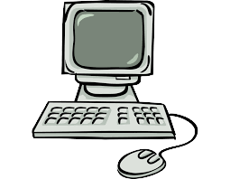

|  |
Historia da Computução
A história da computação teve seu início a cerca de 2.500 anos com a primeira máquina de calcular.
Se é que a podemos dar o nome de máquina, o ÁBACO, na medida que os cálculos foram se complicando, os povos antigos se viram com a necessidade de criar algum instrumento que os auxiliasse com estas atividades.
|